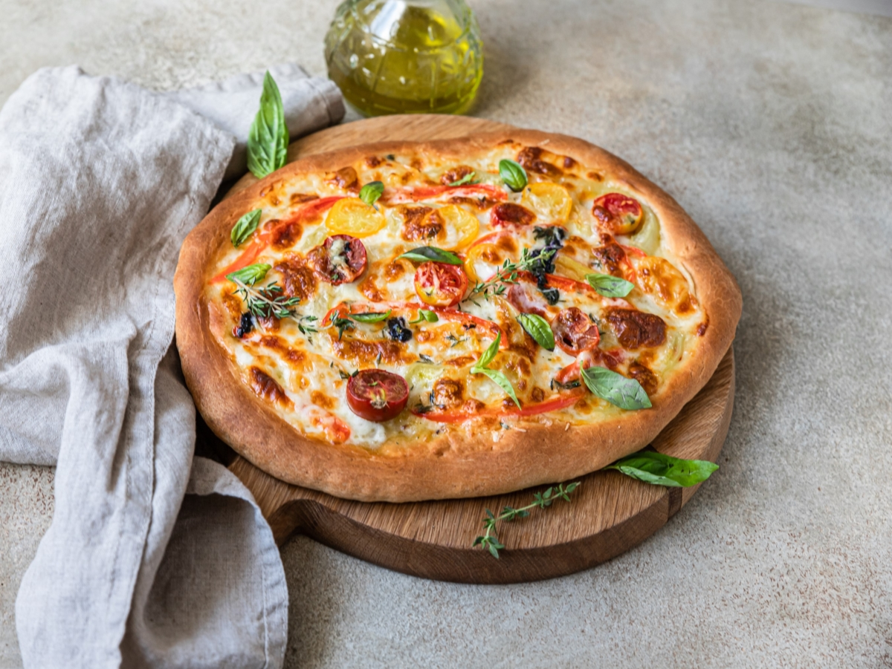
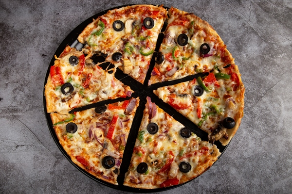

Хочешь пиццу?
Закажи его у нас
Потому что у нас самые вкусные пиццы
Закажи его у нас
Потому что у нас самые вкусные пиццы

Неаполитанская пицца, также известная как пицца в неаполитанском стиле, представляет собой пиццу, приготовленную из помидоров и сыра моцарелла. Помидоры должны быть либо помидорами Сан-Марцано, либо Помодорино-дель-Пьенноло-дель-Везувио, которые растут на вулканических равнинах к югу от горы Везувий.
Кальцо́не — итальянский пирог, закрытая форма пиццы в виде полумесяца. Типичное блюдо центральных и южных регионов Италии. В этой стране он имеет и другие названия: panzerotto и panzarotto. Кальцоне считается традиционной закуской или даже нетипичным десертом.

Римская пицца, в отличии от любой другой, имеет овальную форму. Это пошло со времен, когда жители Рима делали лепешку из пшеничной муки - фокаччу. Само тесто тоже имеет некоторые нюансы: выстаивается на бигге (смесь муки, воды и дрожжей), примерно от 24 до 48 часов.

Сицилийская пицца — это пицца, приготовленная способом, который зародился на Сицилии, Италия. Сицилийская пицца также известна как sfincione или фокачча с начинкой. Этот тип пиццы стал популярным блюдом на западе Сицилии к середине 19 века и был типом пиццы, которую обычно употребляли на Сицилии до 1860-х годов.